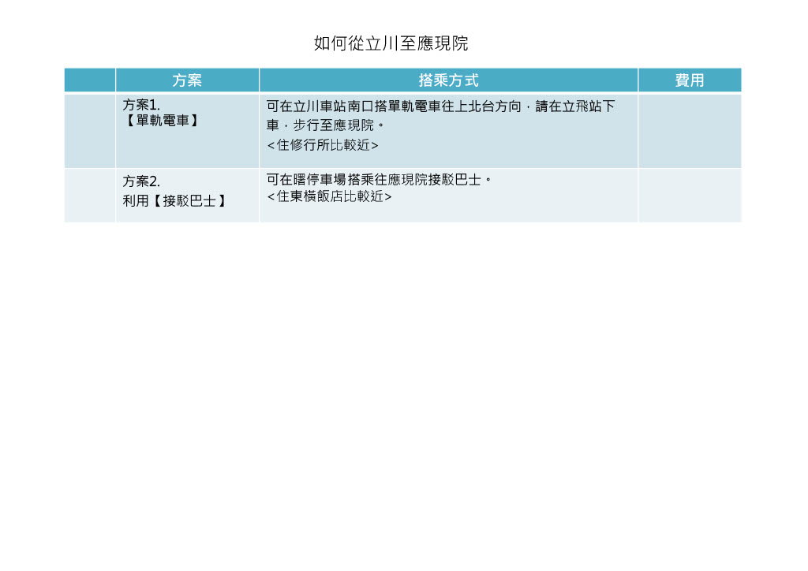

從立川站到『應現院』
提供您兩種主要的交通方案，無論您追求速度效率或是搭乘便利，都能找到最適合的路線，輕鬆抵達目的地。
🚆 選擇您的最佳路線
點擊下方頁籤，探索最適合您的交通方式。
方案1: 單軌電車
最快速且時間準確的選擇，從立川南站搭乘多摩單軌電車，僅需數分鐘即可抵達最近的車站。
立川站南口 → 單軌電車 → 立飛站 → 步行 → 應現院
優點
- 時間精準，不受路況影響
- 班次密集，等候時間短
挑戰
- 出站後需要步行一段距離
- 需要自行搬運行李
方案2: 接駁巴士
從立川站北口附近的公車站搭乘，對於下榻北口飯店或不便步行的旅客是個便利的選項。
立川站北口 → 步行 → 曙町公車站 → 接駁巴士 → 應現院
優點
- 可能更接近目的地，減少步行
- 對攜帶大件行李者較友善
挑戰
- 可能受交通狀況影響行車時間
- 巴士班次可能不如電車頻繁
📍 路線詳細圖文指南

方案1：單軌電車
從JR立川站南口出站後，前往多摩單軌電車「立川南」站，搭乘往北上月台方向的列車，在第三站「立飛」站下車。車程約6分鐘，車資為日幣210元，下車後再步行至應現院。

方案2：接駁巴士
從JR立川站北口出站，步行至「曙町公車站」（近立川東橫INN飯店），在此搭乘前往應現院的接駁巴士。此方案對於從北口出發或住宿於附近的旅客來說，更為便捷。
🚌 特別方案：從應現院到『聖地親苑』
利用【親苑接駁巴士】
若您的行程包含前往「聖地親苑」，可利用兩地之間運行的免費接駁巴士。請在指定的「親苑接駁巴士站」搭乘，即可輕鬆往返，無需額外費用。詳細路線與時刻表請洽詢現場服務人員。
費用：免費📍 路線地圖總覽
✨ 總結與專家建議
追求效率與時間確定性
建議選擇【單軌電車】。其不受路面交通影響的特性，能確保您在預計時間內抵達，是行程緊湊旅客的最佳選擇。
考量便利與行李負擔
若您攜帶較多行李，或從立川站北口出發，【接駁巴士】會是更輕鬆的方案，可減少步行與搬運的辛勞。